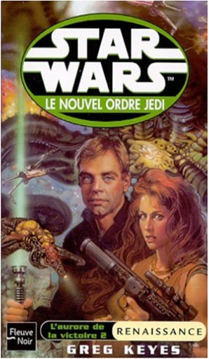
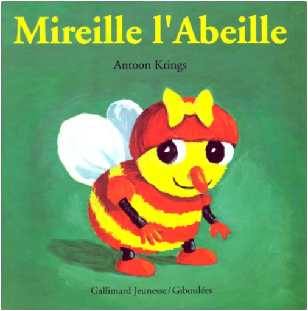

star wars, tome 50 : le nouvel ordre jedi, partie 5, l'aurore de la victoire, partie 2, renaissancegreg keyes  drôles de petites bêtes, tome 1 : mireille l'abeilleantoon krings Mireille est une abeille consciencieuse... et gourmande. Elle ramasse du pollen chaque matin pour en faire des pots de miel. Jusqu'au jour où elle retrouve ses pots... vides ! Qui a mangé son miel ? Ce livre est le premier titre d'une longue série vendue à plus de 2 millions d'exemplaires en France. La collection consacrée aux Drôles de petites bêtes raconte aux enfants (dès trois ans) la vie d'un jardin imaginaire avec beaucoup d'humour et de poésie. Du même auteur : Siméon le papillon, Oscar le cafard, Luce la puce... —Emmanuelle Figueras |


 Made with Delicious Library
Made with Delicious LibraryNancy, State zipflap congrotus delicious library Thomas, Julien